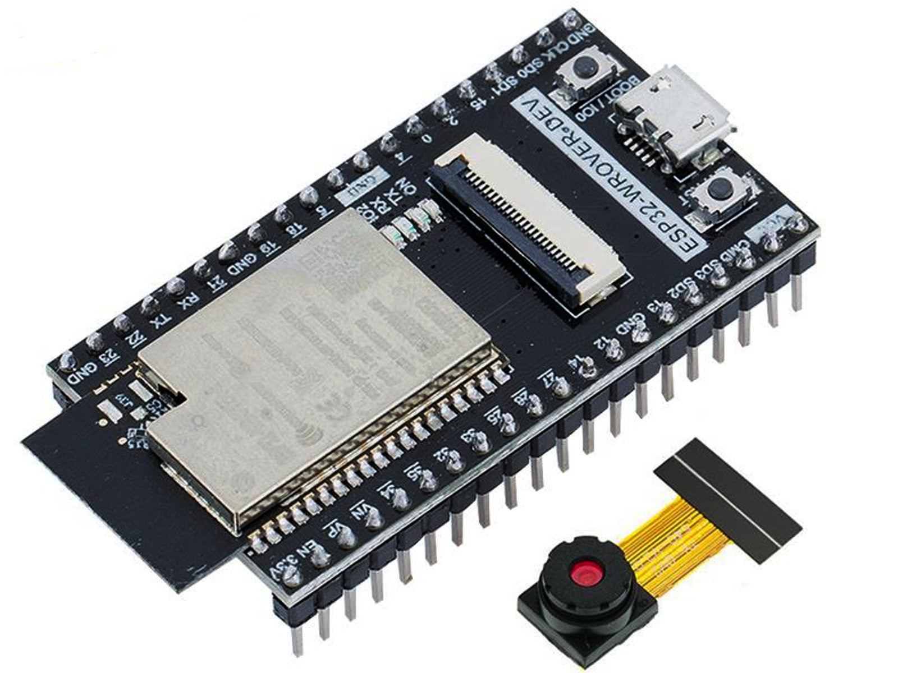

¿Qué es el Internet de las cosas (IoT)?
El término IoT, o Internet de las cosas, se refiere a la red colectiva de dispositivos conectados y a la tecnología que facilita la comunicación entre los dispositivos y la nube, así como entre los propios dispositivos. Gracias a la llegada de los chips de ordenador de bajo coste y a las telecomunicaciones de gran ancho de banda, ahora tenemos miles de millones de dispositivos conectados a Internet. Esto significa que los dispositivos de uso diario, como los cepillos de dientes, las aspiradoras, los coches y las máquinas, pueden utilizar sensores para recopilar datos y responder de forma inteligente a los usuarios.
El Internet de las cosas integra las “cosas” de uso diario con Internet. Los ingenieros en informática llevan agregando sensores y procesadores a los objetos cotidianos desde los años 90. Sin embargo, el progreso fue inicialmente lento porque los chips eran grandes y voluminosos. Los chips de ordenador de baja potencia llamados etiquetas RFID se utilizaron por primera vez para el seguimiento de equipos caros. A medida que se reducía el tamaño de los dispositivos informáticos, estos chips también se hacían más pequeños, más rápidos y más inteligentes.
El coste de la integración de la potencia de computación en objetos pequeños se redujo en gran medida. Por ejemplo, es posible agregar conectividad por medio de las capacidades de los servicios de voz de Alexa a las MCU con menos de 1 MB de RAM integrada, como en el caso de los interruptores de luz. Surgió todo un sector con el objetivo de llenar nuestros hogares, empresas y oficinas de dispositivos de IoT. Estos objetos inteligentes pueden transmitir automáticamente datos hacia y desde Internet. Todos estos “dispositivos de computación invisibles” y la tecnología asociada a ellos se denominan de manera colectiva Internet de las cosas.
Aplicacion de IoT en el proyecto
En este proyecto, la tecnología IoT (Internet de las Cosas) se utiliza para crear un sistema inteligente de registro de asistencia y control de acceso a salones de clases. Los microcontroladores ESP32, ubicados en las puertas de los salones, escanearán los códigos QR de los usuarios al ingresar y salir. Estos dispositivos, conectados a una red Wi-Fi, enviarán la información recopilada en tiempo real a una base de datos central. Este uso de IoT no solo facilita la automatización y precisión en el registro de asistencia, sino que también mejora la seguridad al monitorear y controlar el acceso a los espacios educativos de manera eficiente y en tiempo real.
